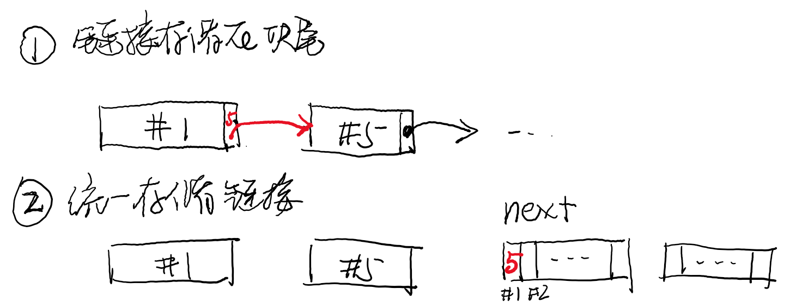
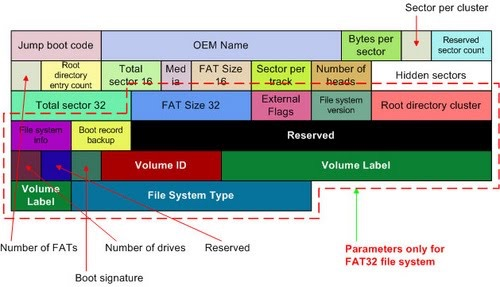
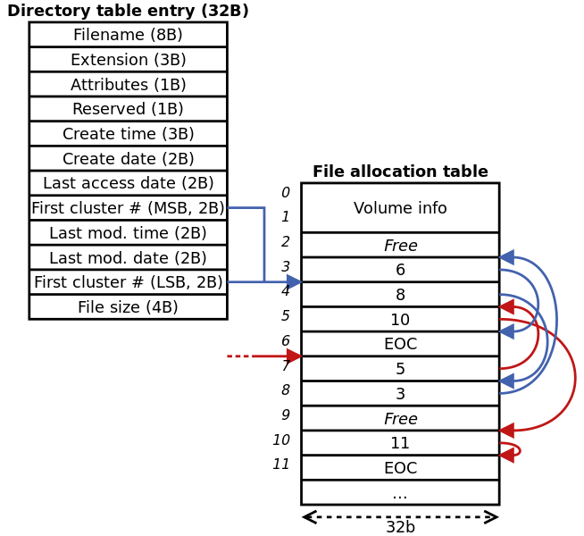
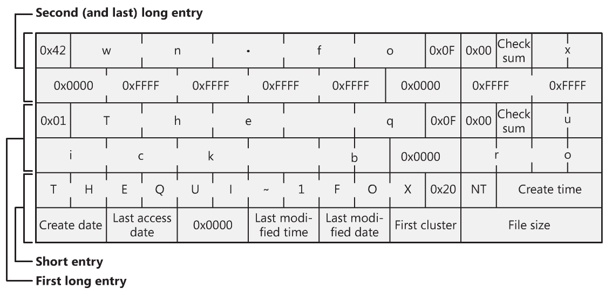
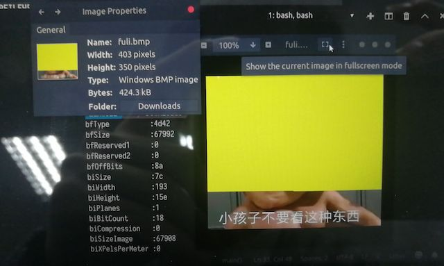

public: True class: center, middle # FAT和ext2 蒋炎岩 <jyy@nju.edu.cn> 南京大学计算机软件研究所 --- # 本讲概述 > 实现磁盘上持久存储的文件系统的几个要素： > > * 文件的数据结构 (链表、树、……) > * 目录文件的数据结构 > * inode的表示和存储 > * balloc/bfree的实现 > > 如何在设计空间中进行取舍，设计高效、有效的文件系统？ ---- * 问题分析 * FAT文件系统 * ext2文件系统 --- class: center, middle # 问题分析 --- # 文件系统设计：从哪里下手？ * .red[抛开workload谈优化，就是耍流氓] -- count: false ---- | **Summary** | **Findings** | | ------------------------------------ | ------------------------------------------------- | | Most files are small | Roughly 2K is the most common size | | Average file size is growing | Almost 200K is the average | | Most bytes are stored in large files | A few big files use most of the space | | File systems contains lots of files | Almost 100K on average | | File systems are roughly half full | Even as disks grow, file systems remain ~50% full | | Directories are typically small | Many have few entries; most have 20 or fewer | --- # “实证研究” 实证研究是计算机系统/计算机软件研究中很重要的一部分 * 真实系统的需求、行为往往未必是你想象的那样 * 必须对实际系统的行为进行调研 ---- 一些例子： * 对system workload的study、建模、构造 (例如Cloud Workloads) * 对bug模式的study (例如并发bug ≈ deadlock + AV + OV) * 对行为的study (例如Github上的开源项目；大家的Git log) --- # 计算机系统研究 * 一份(operating) system研究工作 * It presents a real system, either by a global survey of an entire system or by a selective examination of specific themes embodied in the system. * It presents a system that is unimplemented but utilizes ideas or techniques that you feel the technical community should know. * It addresses a topic in the theoretical areas, for example, performance modelling or security verification. * 评价方法 * original ideas, reality, lessons, choices, context, focus, presentation, > R. Levin and D. Redell. How (and How Not) to Write a Good Systems Paper. In *SIGOPS Operating Systems Review*, 17(3), 1983. --- # 文件系统：设计空间 我们需要在磁盘上维护数据结构，实现： * 维护树状的目录结构 * 支持目录/目录中的文件操作 * 文件的读/写/lseek操作 ---- 实现文件系统的关键数据结构 * 文件(虚拟磁盘)的数据结构 (链表、树、……) * 目录文件的数据结构 * inode的表示和存储 * balloc/bfree的实现 --- class: center, middle # File Allocation Table --- # 实现文件：链表 为每一个block都维护一个“next block” <center></center> ---- 讨论：.green[这两种实现分别有什么优势、劣势？] --- # 文件分配表：集中存储next File Allocation Table (文件分配表) * next block占多少个字节？ FAT32 → 32bit (绝大部分信息都是32bit) * 512B sector → <math>2^{32 + 9}</math>, 2TiB * 4KiB sector → <math>2^{32 + 12}</math>, 16TiB * 但是文件最大只有4GiB (size是32bit) * 存储在哪里？ * sector size？ * 文件系统头部(super block之后) --- # FAT32 Partition Boot Record PBR，存储在分区的头部(例如`/dev/sda1`) * “block”在FAT32中称为“sector”的“cluster” (簇) <center></center> --- # 文件分配表 <center></center> --- # FAT32目录项 FAT32不支持链接；因此inode (元数据)直接存储在目录项中 * 目录项直接按顺序存储在文件中 * FAT16：11字节文件名(8文件名+3扩展名)；向前兼容 <center></center> --- # 关于FAT 在内存中，隐含的假设是内存访问的时间是.red[相同]的 ```c struct block { char data[DATA_SIZE]; uint32_t next; }; uint32_t next[NR_BLOCK]; ``` 但对于磁盘来说，并不是这样的！考虑workloads后产生的.red[access path] (访问磁盘的序列) -- count: false * 操作：`lseek(SEEK_END, …)` * 操作：数据块被🔫毙 --- # 关于FAT (cont'd) FAT如果损坏将会导致非常严重的后果 * 相当于链表所有的“next”都丢失了 * 解决办法：多份FAT备份 (PBR)中指定了“number of FATs” * 通常有两个副本，同时更新 --- # 关于FAT (cont'd) 文件系统可能.red[碎片化] * 首先，磁盘写满一个block大小(例如4KB)的小文件 → 随机删除其中的一些 → 写入一个巨大的文件 * 巨大的文件将“散落”在磁盘的各个角落 * 不利于I/O优化 * lseek需要读取大量FAT数据块 ---- 磁盘碎片整理 * 在磁盘中进行数据的“腾挪” * 使文件尽可能在磁盘中占有连续的块 --- # MiniLab 5：frecov 给定一个已经存在.red[碎片]、.red[FAT被抹去]的文件系统镜像 * 大部分是“黄色”的纯色图片 (有大有小) * 有一张fuli.bmp (你可以通过目录项手工计算出它的第一个块) * 恢复需要一些算法 <center></center> --- class: center, middle # ext2文件系统 --- # 实现文件：索引 问题：.green[如何让大小文件的随机访问都很快？] * Most files are small (Roughly 2K is the most common size) * Average file size is growing (Almost 200K is the average) * Most bytes are stored in large files (A few big files use most of the space) -- count: false ---- .red[混合多种存储方式！] * 文件小的时候，立即能找到它的块 * 文件大的时候，才用索引 --- # 实现文件：多级索引 <center><img src="../static/wiki/os/2019/img/ext2-inode.gif" width="480px"/></center> --- # ext2 inode管理 支持链接，因此ext2单独管理inodes * 每个inode占用128B或256B空间 (相比FAT来说是很大的) * 相比于FAT来说，浪费少量空间 * `tune2fs -l /dev/sda1` - 查看文件系统信息 ---- <center><img src="../static/wiki/os/2019/img/ext2-groups.png" width="640px"/></center> --- # ext2 目录项 最直观的保存方法：顺序存储 * inode编号、长度、类型、文件名 <center><img src="../static/wiki/os/2019/img/ext2-dirent.jpg" width="640px"/></center> --- # 关于ext2 为什么要分组？ * 把分配分为成了两级 (组级、块级) * 不用管理全局的bitmaps (inode/block) * 一定程度的性能优化 * 尽量把相近(例如同一个目录)的文件分配在同一个组里 * 尽量把同一个文件的数据块分配在同一个组里 * 这个设计还使.red[磁盘大小动态调整变得容易]